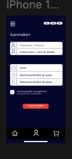
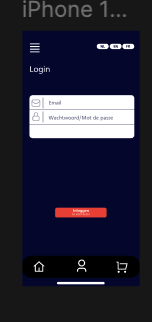
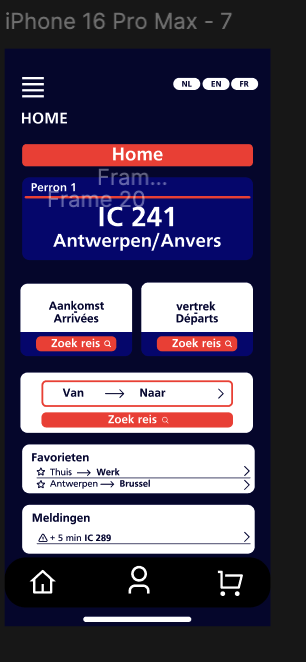
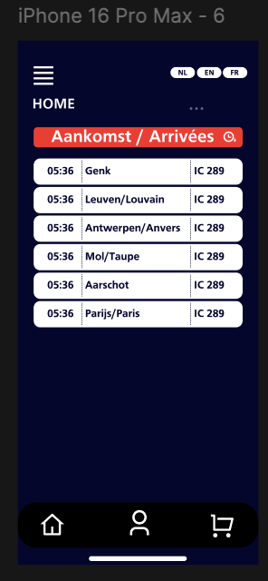

App-schermen – verdere uitwerking





20 oktober 2025
Deze week werkte ik verder aan de trein-app en breidde ik bestaande schermen uit. Ik focuste op basisinteracties zoals aanmelden, navigatie en het bekijken van vertrek- en aankomstinformatie. De nadruk lag op structuur, duidelijkheid en het logisch laten aanvoelen van de flow.



